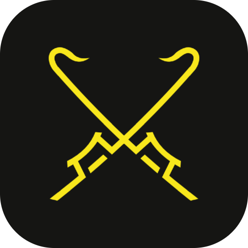

Navegador em grade para jogos idle. Várias contas abertas ao mesmo tempo, cada uma num compartimento isolado — os sites não conseguem ligar uma à outra.
Carregando…
Abra o .dmg e arraste o Kabal Browser para a pasta Aplicativos. Como o app não vem assinado por um desenvolvedor registrado na Apple, o macOS bloqueia a primeira abertura. Para liberar, abra o Terminal e execute:
xattr -dr com.apple.quarantine "/Applications/Kabal Browser.app"
Depois é só abrir normalmente — vale para sempre, não precisa repetir a cada uso. Se preferir não mexer no Terminal: tente abrir o app, feche o aviso, e vá em Ajustes do Sistema → Privacidade e Segurança, onde aparece um botão Abrir Mesmo Assim.
O SmartScreen mostra uma tela azul dizendo que protegeu o seu PC. Clique em Mais informações e depois em Executar assim mesmo. Também é só na primeira vez.